WORKFLOW
ARCHITECTURE —
SYSTEM LOGIC
如何搭建小红书内容运营 Agent — 全链路方法论
01
MODULE 01 · INCEPTION
账号分析
🧠 人工
挖掘业务问题：为什么同类型帖文有些火了有些没火？🤖 Agent
从历史内容中提取共性规律，验证人提出的假设AI 无法凭空发现「岗位帖为什么没人买单」这类业务直觉——但擅长从大量帖子中提取数据共性。人提问题，AI 验假设。
EXPLORE →
02
Path B：基于钩子体系 → 输出差异化标签
MODULE 02 · COVER SYSTEM
封面制作（视觉风格 + 封面文案）
🧠 人工
定义封面目的：「停下来」+「点进去」，研究样本、定义视觉逻辑与文案逻辑，设计 AI 推理框架🤖 Agent
Path A：分析封面共性 → 输出视觉关键词Path B：基于钩子体系 → 输出差异化标签
AI 无法明白凭空明白封面的视觉逻辑和什么样的内容共振，所以需要人工定义视觉逻辑和思考框架，AI再进行执行。
EXPLORE →
03
MODULE 03 · TITLE
标题输出
🧠 人工
定义标题目的与逻辑，设计 AI 判断路径，建立模板体系🤖 Agent
基于模板批量生成 5 个标题变体，按推荐度排序AI 无法明白标题的目的，所以需要人工设计思考框架，随后基于人工输入的模板批量生成变体。人选路径定模板，AI再填充优化。
EXPLORE →
04
MODULE 04 · CONTENT
文案制作
🧠 人工
定义正文目的：「展示全面信息」还是「建立用户信任」？🤖 Agent
按模板扩写、润色、生成 AI 认为的最优版本AI 无法理解正文的目的是什么——所以需要人工设计思考框架，AI 再执行生产。
EXPLORE →
05
MODULE 05 · CONVERSION
私域转化
🧠 人工
判断用户顾虑和信任缺口：像骗子？引导不够清晰？🤖 Agent
基于顾虑点优化话术、生成回复、AB 测试AI 无法判断用户真实顾虑——「像骗子？」需要一线体感。但擅长针对顾虑批量生成话术变体。人诊断，AI 生成。
EXPLORE →
06
MODULE 06 · ANALYTICS
数据分析
🧠 人工
选择核心指标和优先级：优先私域转化还是流量曝光？🤖 Agent
跨维度对比数据、识别异常、生成复盘报告AI 无法决定当前阶段应优先提升哪个指标——这是战略判断。但擅长对比数据识别异常。人定优先级，AI 跑数据。
EXPLORE →
07
MODULE 07 · GROWTH
增长优化
🧠 人工
不断挖掘竞品和爆款：「谁突然跑起来了」🤖 Agent
执行结构化拆解，找到共性，不断 update 知识库AI 无法主动发现值得研究的竞品和爆款——但擅长结构化拆解提炼共性。人持续发现目标，AI 分析更新。
EXPLORE →
01 // 问题发现🧠 人工
挖掘业务问题
账号调性不只是文字风格——还包括品牌想成为什么、用户为什么信任你、哪些表达不能碰。先由人发现问题，再让 AI 验证。
02 // 问题发现🧠 人工
岗位帖为什么跑不动？
目前账号主推流仍然是【求职工具/模版】及【求职方法/渠道型】帖子，标签是 #领英 #简历模板 #职场干货。
但当发【岗位推荐】帖给雇主做品牌宣传时，无人买单。
人的直觉判断：平台对账号的强识别还是「求职工具 / LinkedIn / 简历面试」，而不是「岗位机会库 / 公司推荐 / 小众外企招聘」。
但当发【岗位推荐】帖给雇主做品牌宣传时，无人买单。
人的直觉判断：平台对账号的强识别还是「求职工具 / LinkedIn / 简历面试」，而不是「岗位机会库 / 公司推荐 / 小众外企招聘」。
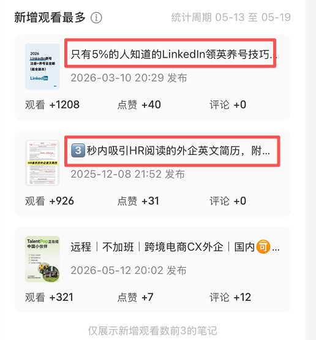
新增观看最多 · 统计周期 05-13 至 05-19
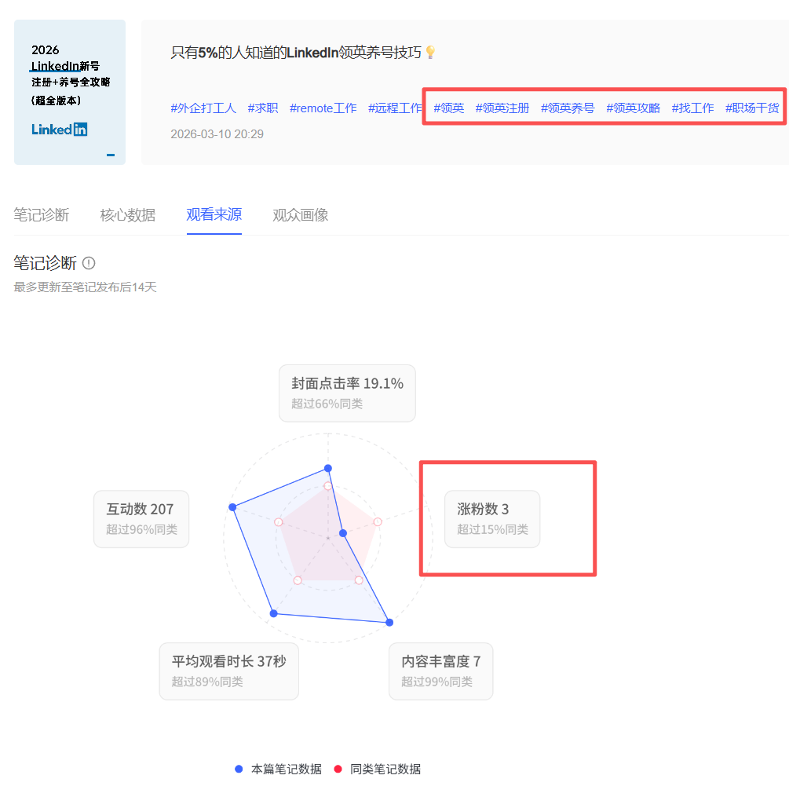
LinkedIn 养号帖 · #领英 #领英注册 #领英养号
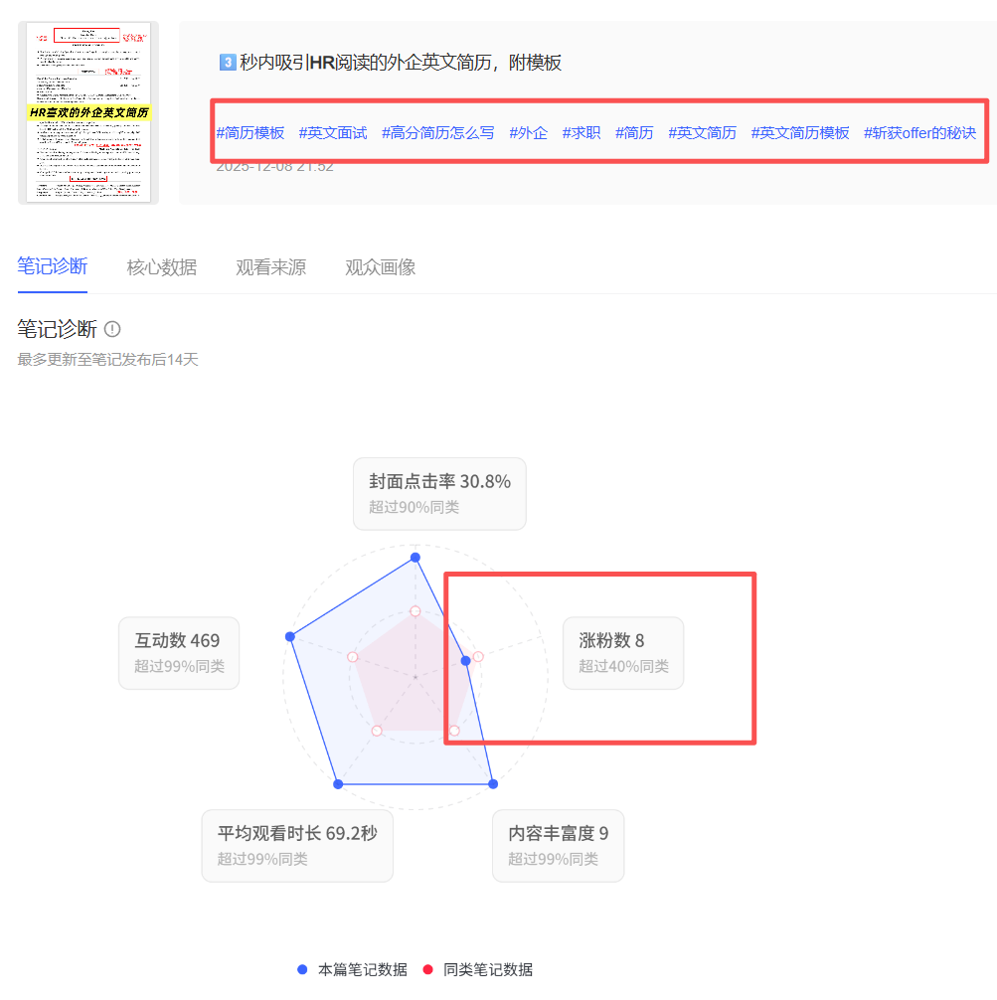
英文简历帖 · #简历模板 #英文简历 #求职
02 // AI 验证🤖 Agent
分析这几类帖子的共性
输入：【求职工具/模版】及【求职方法/渠道型】历史帖子数据
分析维度：标签分布、受众画像、互动模式
分析维度：标签分布、受众画像、互动模式
AI 输出结论：发岗位帖时，很可能先被推给「想学方法、想看情绪共鸣」的人，而不是「正在找具体岗位的人」。这批人看到岗位帖，点击和互动弱，导致岗位帖过不了初始流量池。
03 // 问题发现🧠 人工
为什么有些岗位帖🔥
但其余跑不过？
在岗位/公司发布的帖子中，也有几个火爆的岗位帖在跑。
人的直觉判断：火的帖子和不火的帖子之间一定存在某种结构性差异，不只是运气。
人的直觉判断：火的帖子和不火的帖子之间一定存在某种结构性差异，不只是运气。
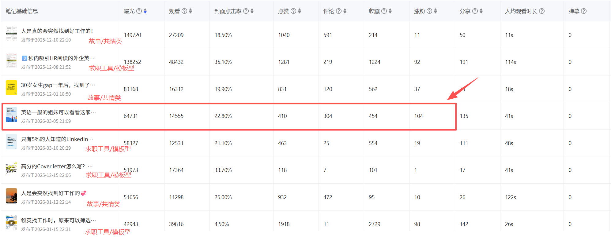
笔记数据对比 · 「英语一般的姐妹可以看看这家」涨粉 104，远超同类
03 // AI 验证🤖 Agent
分析🔥帖子的共性
输入：火爆岗位帖 vs 普通岗位帖
对比维度：标题结构、封面风格、切入角度
对比维度：标题结构、封面风格、切入角度
CASE STUDY: 2 VIRAL POSTS
① BuildHealth — 打的是：英语不好、学历普通的人也能看
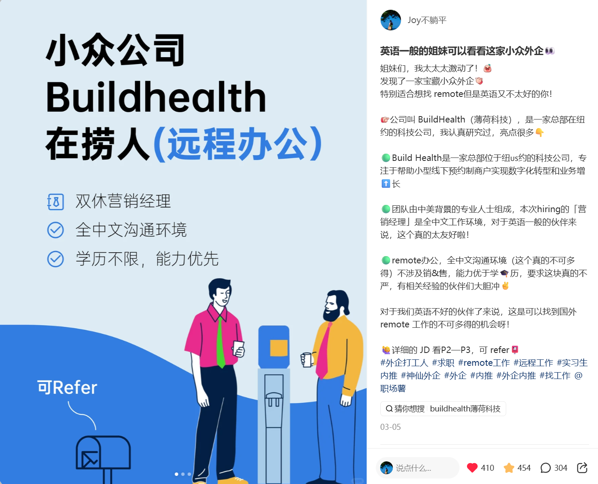
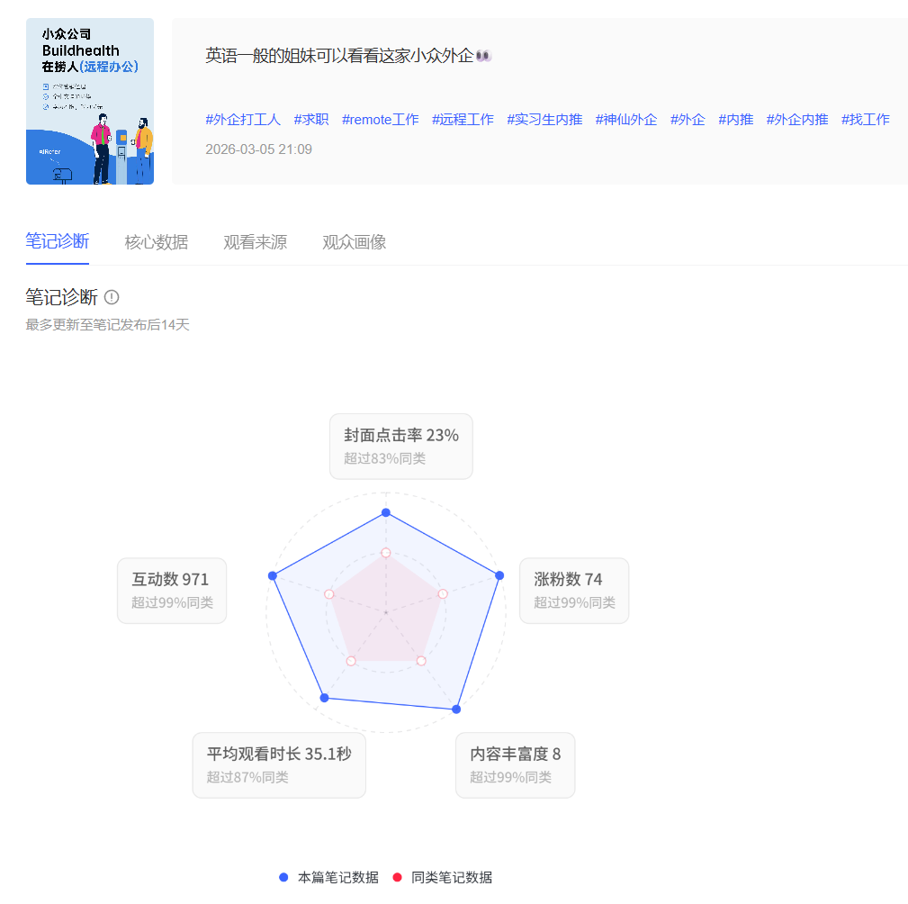
涨粉 74 · 互动 971 · 超过99%同类
② RealityHoliday — 打的是：有生活想象 + 岗位明确 + remote 真实可投
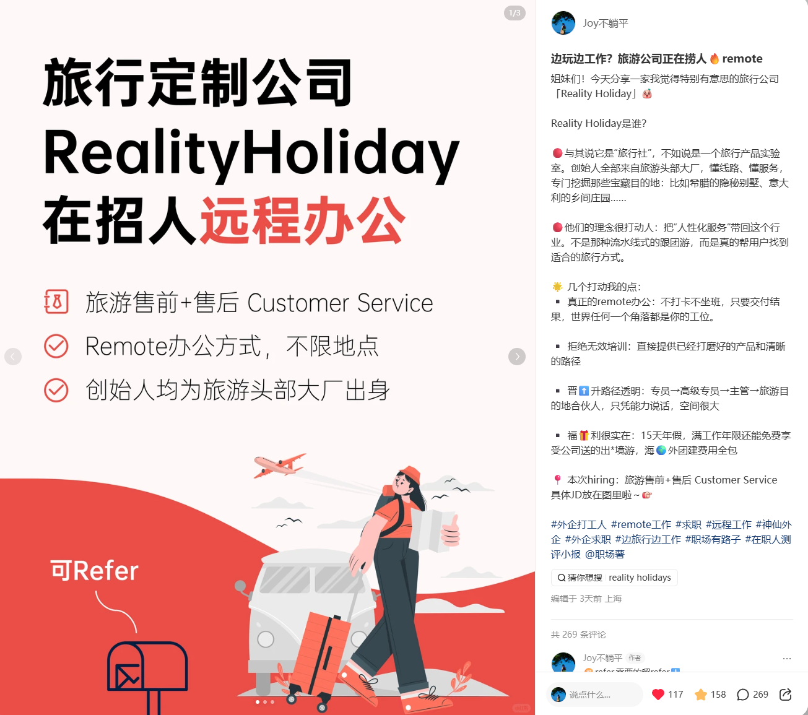
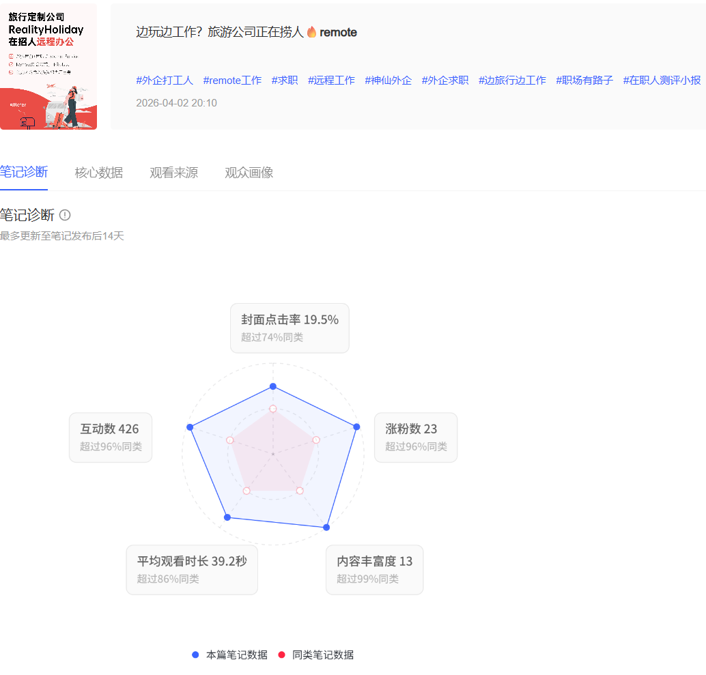
涨粉 23 · 互动 426 · 超过96%同类
AI 输出结论：火爆帖子都在回答「我这种人能不能投？」
而跑不动的帖子都在说「这家公司有什么福利？」——从「帮用户打消顾虑」变成了「展示公司福利/公司很牛」。
核心洞察：用户原本以为自己不够格，但你告诉她「这类人也有机会」——这才是岗位帖的正确切入角度。
而跑不动的帖子都在说「这家公司有什么福利？」——从「帮用户打消顾虑」变成了「展示公司福利/公司很牛」。
核心洞察：用户原本以为自己不够格，但你告诉她「这类人也有机会」——这才是岗位帖的正确切入角度。
04 // 人工审核🧠 人工
审核分析逻辑，确认结论
行动决策：
· 不抛弃工具类和情绪类用户，而是把她们「养熟」成岗位用户
· 不要强行改成纯岗位号，做成：求职方法带岗位、情绪痛点带岗位、公司推荐带路径
· 内容比例调整：70% 岗位推荐 / 10% 工具方法 / 10% 情绪故事 / 10% 合集资源
· 需要将流量较好的岗位帖文进行分析并收集特征，供AI Agent调用
· 不抛弃工具类和情绪类用户，而是把她们「养熟」成岗位用户
· 不要强行改成纯岗位号，做成：求职方法带岗位、情绪痛点带岗位、公司推荐带路径
· 内容比例调整：70% 岗位推荐 / 10% 工具方法 / 10% 情绪故事 / 10% 合集资源
· 需要将流量较好的岗位帖文进行分析并收集特征，供AI Agent调用
最终输出：需要将流量较好的岗位帖文进行分析并收集特征，Agent 后续环节可调用 → 流转至环节二
01 // 目的定义🧠 人工
定义封面的作用
目的：在让 AI Agent 产出封面之前，需要先想明白封面到底承担什么任务。封面不是装饰，而是信息流里的「拦截器」——它只有两个使命：
A. 让人在刷信息流时抓住注意力、停下来 — 视觉层面的拦截，靠画面、色彩、构图在一秒内让人下意识「打断滑动惯性」。
B. 留适当的钩子引起让人点击的欲望 — 文案层面的牵引，靠标签、文字、痛点回应让人觉得「这条跟我有关，我要点进去看」。
逻辑：这两个使命对应两条并行路径：Path A 解决「视觉风格如何让人停下来」，Path B 解决「封面文案如何让人点进去」。
A. 让人在刷信息流时抓住注意力、停下来 — 视觉层面的拦截，靠画面、色彩、构图在一秒内让人下意识「打断滑动惯性」。
B. 留适当的钩子引起让人点击的欲望 — 文案层面的牵引，靠标签、文字、痛点回应让人觉得「这条跟我有关，我要点进去看」。
逻辑：这两个使命对应两条并行路径：Path A 解决「视觉风格如何让人停下来」，Path B 解决「封面文案如何让人点进去」。
PATH A · 视觉风格
|
PATH B · 封面文案
A-02 // 规律研究🧠 人工 🤖 Agent
什么样的封面可以吸引人的注意力让人停下来？
人先发现值得研究的问题并筛选样本，AI 再从样本中拆解可复用的视觉规律
人的发现：同样是招聘封面，有些会让人下意识停下来、想点进去看；有些即使信息完整，也会被快速划走。
人的动作：我把所有能吸引我继续研究的封面都截图下来，整理成封面样本 P1-P6。
AI 的动作：把 P1-P6 抛给 AI，让它从颜色、场景、构图、文字层级、品牌气质和情绪氛围中分析共性，最后得到 P8 的结论。
分工逻辑：人负责发现问题、判断哪些封面真的有点击欲；AI 负责把直觉样本结构化，提炼成后续可复用的封面特征。
人的动作：我把所有能吸引我继续研究的封面都截图下来，整理成封面样本 P1-P6。
AI 的动作：把 P1-P6 抛给 AI，让它从颜色、场景、构图、文字层级、品牌气质和情绪氛围中分析共性，最后得到 P8 的结论。
分工逻辑：人负责发现问题、判断哪些封面真的有点击欲；AI 负责把直觉样本结构化，提炼成后续可复用的封面特征。
封面样本 P1-P6：让我产生点击欲的招聘封面
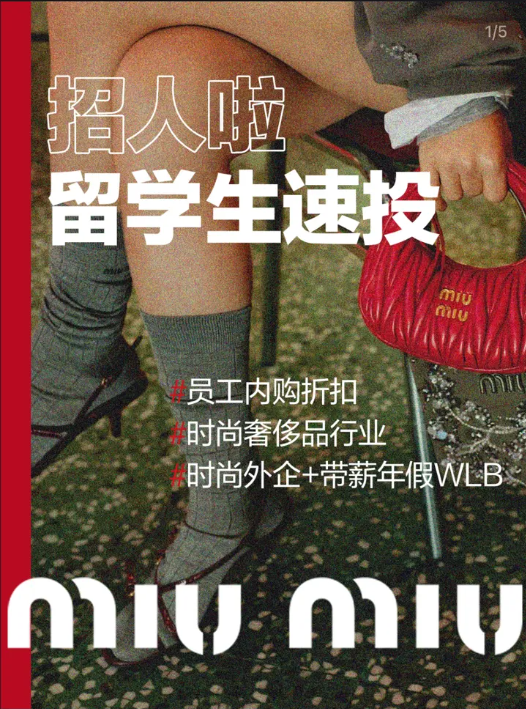
P1 · 强品牌识别 + 高利益点
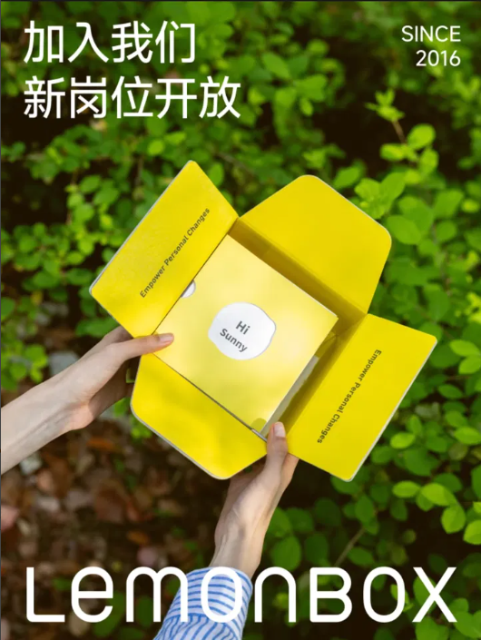
P2 · 明亮色块 + 加入邀请
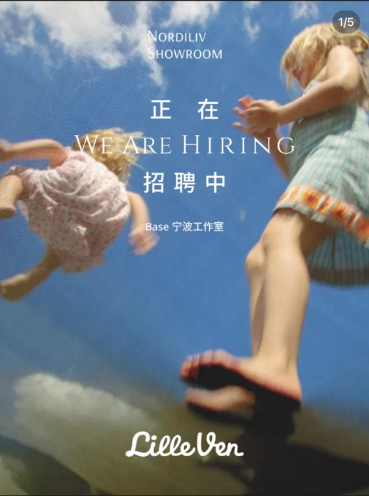
P3 · 低机位真实场景 + 故事感
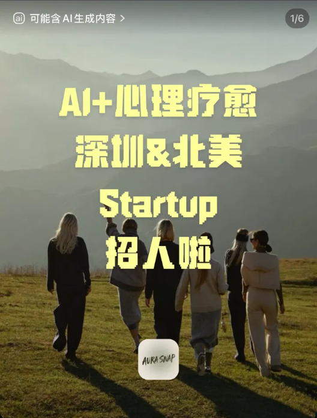
P4 · 自然场景 + 高饱和亮字
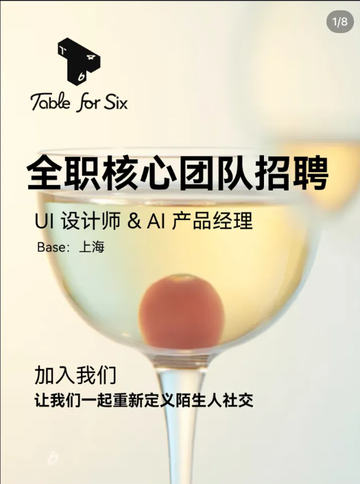
P5 · 质感物件 + 岗位清晰
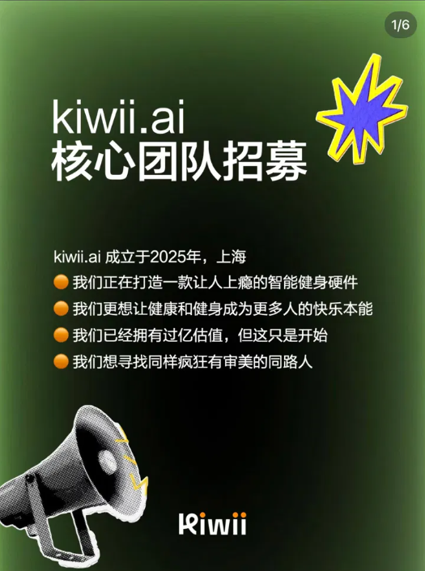
P6 · 深底色 + 信息密度
P8：AI 输出的封面共性结论
- 深底色 + 高饱和亮字 + 真实场景图最容易让用户在信息流里停下来。
- 高饱和暖色最抢眼，红、橙、黄在视觉优先级上天然靠前。
- 小红书招聘封面大多偏暖白、偏粉、偏浅色，深色或暗调背景天然更像"异类"，能打断滚动节奏。
- 自然场景里的绿色和蓝色也很容易留住目光，因为它们有真实感、空间感和向往感。
A-03 // 逻辑定义🧠 人工
定义视觉逻辑
核心原则：画面能够代表内容在讲什么——用画面讲故事，而不只是传递信息；画面和内容完全共振。
核心逻辑：封面先让人停下来，文案再让人点进去。视觉负责"停下"——用真实场景、高识别色彩、强情绪氛围和目标用户会共鸣的审美，在一秒内打断信息流。
封面公式：一张有质感/有故事的图 + 几个大字点明主题 + 1-2个差异化标签击中痛点 + 清晰的品牌标识
视觉规则：
· 深底色 + 高饱和亮字 + 真实场景图
· 小红书大部分帖子偏暖偏白偏粉，深色/暗调背景天然是「异类」，会打断滚动节奏
· 自然场景的绿色和蓝色也很能留住目光
核心逻辑：封面先让人停下来，文案再让人点进去。视觉负责"停下"——用真实场景、高识别色彩、强情绪氛围和目标用户会共鸣的审美，在一秒内打断信息流。
封面公式：一张有质感/有故事的图 + 几个大字点明主题 + 1-2个差异化标签击中痛点 + 清晰的品牌标识
视觉规则：
· 深底色 + 高饱和亮字 + 真实场景图
· 小红书大部分帖子偏暖偏白偏粉，深色/暗调背景天然是「异类」，会打断滚动节奏
· 自然场景的绿色和蓝色也很能留住目光
A-04 // 问题设计🧠 人工
设计 AI 推理框架
人为 AI 设计思考框架——AI 不知道该想什么，需要人告诉它应该回答哪些问题
问题框架：
① 这家公司调性是什么样子？
② 这家公司关键词是什么？
③ 这家公司在讲什么故事？
④ 这家公司加入后是什么样的画面？
① 这家公司调性是什么样子？
② 这家公司关键词是什么？
③ 这家公司在讲什么故事？
④ 这家公司加入后是什么样的画面？
A-05 // AI 输出🤖 Agent
生成封面风格关键词
Agent 根据公司信息 + P8 结论 + 视觉逻辑，输出可执行的搜索关键词
输入：公司名称 + 封面点击欲研究结论 + 视觉逻辑
输出维度：
① 这家公司的调性关键词
② 这家公司在讲什么故事
③ 能够和这家公司共振的画面什么样子
④ 可以在 Pinterest 搜索图片的相关关键词
⑤ 封面如何先制造停留，再交给文案完成点击
输出维度：
① 这家公司的调性关键词
② 这家公司在讲什么故事
③ 能够和这家公司共振的画面什么样子
④ 可以在 Pinterest 搜索图片的相关关键词
⑤ 封面如何先制造停留，再交给文案完成点击
执行：拿到关键词后，在 Pinterest 寻找共振画面
B-02 // 逻辑定义🧠 人工
定义思考逻辑
FROM MODULE 01 · 结论一
火爆帖子都在回答「我这种人能不能投？」— 所以需要在封面上就打消害怕投递的人的顾虑。
→ 推导出：进行用户洞察和心理探测，推理出什么样的人害怕投递、她们害怕什么，然后填写能打消恐惧的利益标签。
FROM MODULE 01 · 结论二
让人有想象、有向往 — 用户不只是在找一份工作，而是在找一个「dream 的画面」。
→ 推导出：回答「这类用户的 dream job 到底长什么样？」，然后填写公司钩子，让人觉得加入这家公司是「我的 dream、是我向往的」。
B-03 // 问题设计🧠 人工
设计 AI 推理框架
AI 无法自行洞察用户心理——需要人设计它的推理路径，告诉它该从哪些维度思考
① 这类用户的 dream job 到底是什么样子的？填写公司钩子，让人觉得加入这家公司是「我的 dream、是向往的」
② 要进行用户洞察和探测心理，推理出什么样的人害怕，填写打消这些人害怕的标签
② 要进行用户洞察和探测心理，推理出什么样的人害怕，填写打消这些人害怕的标签
B-04 // 体系定义🧠 人工
定义钩子体系
公司钩子（引发好奇心）：
小众外企宝藏外企百年外企独角兽创始人/团队背景好业务增长快全球团队Remote全员远程福利好边旅行边工作HC多
利益钩子（打消顾虑）：
门槛不高普通人也能投女性友好初级友好英语友好适合转行非技术岗
小众外企宝藏外企百年外企独角兽创始人/团队背景好业务增长快全球团队Remote全员远程福利好边旅行边工作HC多
利益钩子（打消顾虑）：
门槛不高普通人也能投女性友好初级友好英语友好适合转行非技术岗
B-05 // AI 输出🤖 Agent
生成封面差异化标签
输入：公司信息 + 钩子体系
输出：
· 2 个最能引发人好奇心的差异化标签（公司钩子）
· 2 个最能打消不敢投递顾虑的差异化标签（利益钩子）
输出：
· 2 个最能引发人好奇心的差异化标签（公司钩子）
· 2 个最能打消不敢投递顾虑的差异化标签（利益钩子）
产出：封面差异化标签方案
06 // 产出汇总
Path A + Path B → 完整封面方案
视觉风格关键词 + 封面差异化标签 = 可执行的封面制作方案 → 流转至环节三
OUTPUT SAMPLES · 实际产出封面及点击率
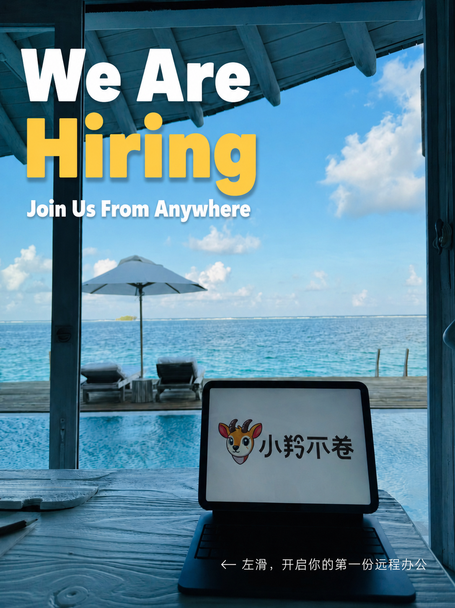
Vorka · CTR 21.20%
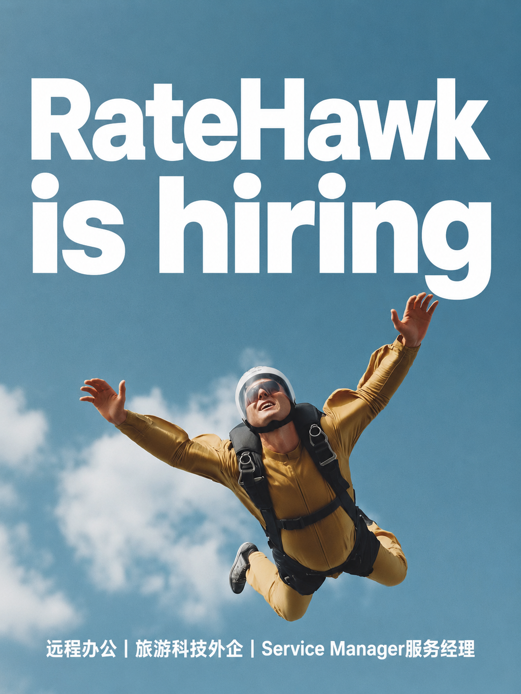
RateHawk · CTR 21.00%
Kuoni Tumlare · CTR 19.90%
封面点击率表现
三张封面点击率均显著高于平均水平，验证了 Path A 视觉逻辑 + Path B 文案标签的组合有效性。
参考基准：平均 16.2% ｜ 最高 23.7% ｜ 最低 9.1%
实际产出：Vorka 21.20% ｜ RateHawk 21.00% ｜ Kuoni Tumlare 19.90%
三张封面均进入 Top 20% 区间，接近历史最高值。
三张封面点击率均显著高于平均水平，验证了 Path A 视觉逻辑 + Path B 文案标签的组合有效性。
参考基准：平均 16.2% ｜ 最高 23.7% ｜ 最低 9.1%
实际产出：Vorka 21.20% ｜ RateHawk 21.00% ｜ Kuoni Tumlare 19.90%
三张封面均进入 Top 20% 区间，接近历史最高值。
01 // 目的定义🧠 人工
定义标题目的与思考逻辑
目的：标题在小红书承担双重任务：搜索 + 点击。要让搜索编辑效应最大化，标题里必须包含能被搜到、又能引发点击的关键词——公司名、岗位名、行业词、内推/refer/国内可申/招人。
逻辑：但这些关键词的组合方式取决于一个前提：用户认不认识这家公司。
如果公司有知名度，「公司名」本身就是最大的搜索入口和点击钩子，直接按模版走就行；如果公司没知名度，「公司名」反而是噪音，需要用人群钩子、利益钩子或公司类型来替代它，让标题击中正确的人群。
所以让 AI 在第一步就判断公司知名度，不是随意设计的——而是因为这个判断直接决定了后续标题公式的走向：用哪个模版、填什么关键词、怎么排列组合，都从这一步分叉。
逻辑：但这些关键词的组合方式取决于一个前提：用户认不认识这家公司。
如果公司有知名度，「公司名」本身就是最大的搜索入口和点击钩子，直接按模版走就行；如果公司没知名度，「公司名」反而是噪音，需要用人群钩子、利益钩子或公司类型来替代它，让标题击中正确的人群。
所以让 AI 在第一步就判断公司知名度，不是随意设计的——而是因为这个判断直接决定了后续标题公式的走向：用哪个模版、填什么关键词、怎么排列组合，都从这一步分叉。
02 // 问题设计🧠 人工
设计 AI 推理框架
人为 AI 设计判断路径——AI 不知道「知名度」对标题有什么影响，需要人告诉它判断规则和分叉逻辑
① 需要判断这家公司是否有知名度
② 有知名度 → 直接按模版来
③ 没知名度 → 衡量哪种写法更击中人群
② 有知名度 → 直接按模版来
③ 没知名度 → 衡量哪种写法更击中人群
03 // 模板定义🧠 人工
定义标题模板
有知名度：【公司名】+【公司钩子】(开放X个岗位/有X个HC) +【可内推/可refer/国内可申】
例：Canva + 开放6个远程岗
例：设计人的梦中情司Canva可画 + 有21个HC！
例：设计人的梦中情司Canva可画 + 有21个HC！
没知名度 A：【人群钩子】+【可以试试这家】+【公司钩子】
例：英语一般的 + 可以试试这家 + 小众外企👀
没知名度 B：【公司类型】+【正在捞人/招人中】+【公司钩子/利益钩子】
例：欧洲咨询公司 + 正在招人 + 初级友好
例：北美科技外企 + 招人中🙋 + 40+远程岗国内可申
例：北美科技外企 + 招人中🙋 + 40+远程岗国内可申
没知名度 C：【这家全员remote/远程的】+【公司钩子】+【利益钩子】
例：这家全员remote的 + 小众外企 + 文科生大胆冲！
没知名度 D：【人群钩子】+【公司类型】+ 大胆投 +【利益钩子】
例：空窗期的姐妹 + 宠物外企 + 大胆投 + 女性友好
04 // AI 输出🤖 Agent
生成正文标题
输入：公司信息 + 知名度判断 + 模板体系 + 钩子库
输出：生成 5 个标题，按推荐程度降序排列
行动暗示词库： 可内推国内可申大胆投大胆冲招人中
输出：生成 5 个标题，按推荐程度降序排列
行动暗示词库： 可内推国内可申大胆投大胆冲招人中
产出：5 个候选标题（已排序）→ 流转至环节四
01 // 目的定义🧠 人工
定义正文目的与思考逻辑
目的：让人有信任度，信息全面但也要留点钩子让人想要了解或者直接投递
逻辑：正文不是信息罗列，而是「信任建设」——展示全面信息的同时，让用户觉得这个账号值得关注和私聊。
逻辑：正文不是信息罗列，而是「信任建设」——展示全面信息的同时，让用户觉得这个账号值得关注和私聊。
02 // 模板定义🧠 人工
输入正文模板
TEMPLATE
👩💻挑战发1000个小而美💼(x/1000)今天分享的是一家开源科技🏢——Supabase
💻公司是干嘛的？
🎁为什么推这家？
🔍这次他们放了个40+remote roles，岗位方向蛮多的
📩需要JD的可以dd我～
03 // AI 输出🤖 Agent
按模板生成最优正文
输入：公司信息 + 正文目的 + 模板结构
执行：根据目的和思考方式对模板进行扩写、润色、生成 AI 认为的最优版本
输出：成品正文（含 emoji + 分段 + 私域钩子）
执行：根据目的和思考方式对模板进行扩写、润色、生成 AI 认为的最优版本
输出：成品正文（含 emoji + 分段 + 私域钩子）
产出：完整正文文案 → 流转至环节五
01 // 问题发现🧠 人工
私域转化率低
诊断逻辑：是否存在用户顾虑和信任缺口？
· 用户从帖子进入私信后，是否愿意按照引导完成动作？
· 引导话术是否让用户产生不信任感？
· 操作链路是否清晰，是否存在让用户觉得「太麻烦」而流失的环节？
· 是否有同类账号的恶劣行为（骗钱、虚假岗位）导致用户对所有类似引导天然警惕？
· 用户从帖子进入私信后，是否愿意按照引导完成动作？
· 引导话术是否让用户产生不信任感？
· 操作链路是否清晰，是否存在让用户觉得「太麻烦」而流失的环节？
· 是否有同类账号的恶劣行为（骗钱、虚假岗位）导致用户对所有类似引导天然警惕？
02 // 问题诊断🧠 人工
诊断原话术问题
优化前的私信话术存在多处信任缺口，直接影响用户完成转化动作的意愿
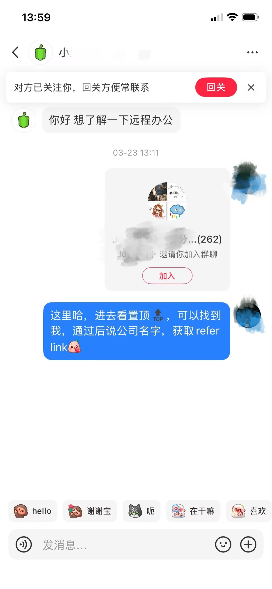
优化前 · 原始私信话术
诊断出的核心问题：
a) 跳过问题直接引导加群，触发用户防御心理。用户来私信通常带着具体问题（想了解远程岗位），但话术没有回应用户的问题，上来就让人加群——这种「不回答、先拉群」的模式和微商、诈骗账号的行为高度相似，会让用户下意识产生反感和不信任。
b) 操作路径模糊，用户觉得麻烦而放弃。只说「进去看置顶找到我」，但没有说清楚每一步具体做什么。用户看到一团模糊的指令，觉得流程复杂、不确定结果，很容易直接放弃。
c) 行业信任危机加剧用户警觉。小红书上存在大量类似操作模式的账号——也是引导加群、引导加微信，但最终目的是收费或骗取个人信息。用户在过去可能已经踩过坑，所以对任何「加群」「加微信」的引导都会本能地保持警惕。
a) 跳过问题直接引导加群，触发用户防御心理。用户来私信通常带着具体问题（想了解远程岗位），但话术没有回应用户的问题，上来就让人加群——这种「不回答、先拉群」的模式和微商、诈骗账号的行为高度相似，会让用户下意识产生反感和不信任。
b) 操作路径模糊，用户觉得麻烦而放弃。只说「进去看置顶找到我」，但没有说清楚每一步具体做什么。用户看到一团模糊的指令，觉得流程复杂、不确定结果，很容易直接放弃。
c) 行业信任危机加剧用户警觉。小红书上存在大量类似操作模式的账号——也是引导加群、引导加微信，但最终目的是收费或骗取个人信息。用户在过去可能已经踩过坑，所以对任何「加群」「加微信」的引导都会本能地保持警惕。
02 // 话术优化🧠 人工 🤖 Agent
重新设计引导话术
针对诊断出的三个问题，逐一设计对应的信任修复策略
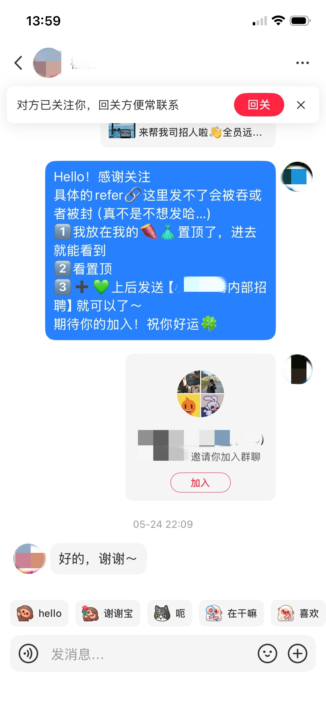
优化后 · 版本 A
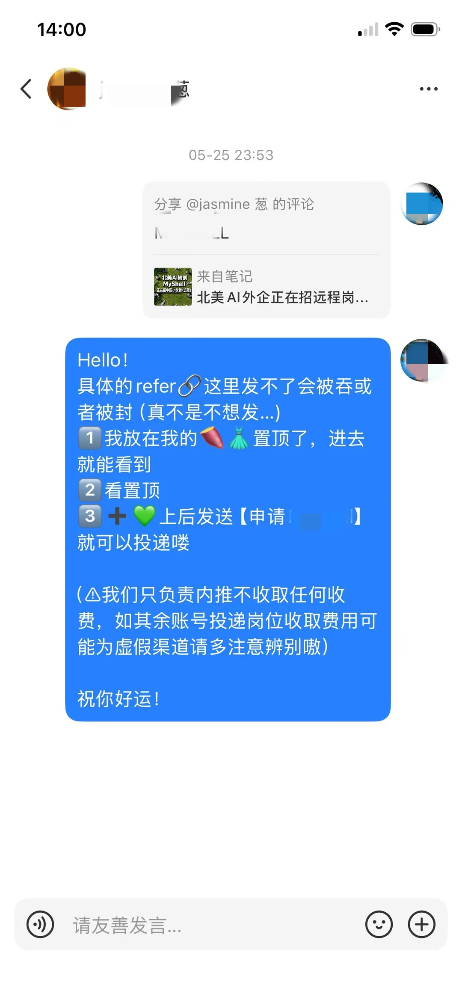
优化后 · 版本 B
优化策略与对应逻辑：
a) 先解释「为什么不能直接发链接」→ 主动打消用户顾虑。开头就说明「具体的 refer 链接这里发不了会被吞或者被封」——把「不直接给链接」这个反常行为的原因提前交代，让用户理解这是平台规则限制而不是故意隐藏，从根源上消除「为什么不直接给我」的疑虑。
b) 用数字编号拆解每一步操作 → 缓解用户焦躁。把引导动作拆成 ①②③ 三步清晰指令，每一步都是一个简单动作。用户不需要猜「接下来做什么」，看到编号就知道流程短、步骤明确——降低「太麻烦了不想弄」的心理门槛。
c) 加微信后直接展示具体操作关键词 → 即刻消除用户疑虑。话术里直接写明「发送【XX 内部招聘】」「发送【申请 XX】」——用户还没加微信就已经知道加了之后要做什么、会得到什么。这种「提前透明」让用户感知到这确实是一个正规的投递渠道，而不是加了微信之后才发现是另一回事。
d) 主动声明免费且提醒防骗 → 直接击碎最大顾虑。话术末尾加上「我们只负责内推不收取任何费用，如其余账号投递岗位收取费用可能为虚假渠道请多注意辨别」——把用户最核心的担忧（会不会收钱、会不会被骗）提前说破，而不是等用户自己去猜。这种「先于用户开口打消顾虑」的写法，本身就是一种信任建设。
a) 先解释「为什么不能直接发链接」→ 主动打消用户顾虑。开头就说明「具体的 refer 链接这里发不了会被吞或者被封」——把「不直接给链接」这个反常行为的原因提前交代，让用户理解这是平台规则限制而不是故意隐藏，从根源上消除「为什么不直接给我」的疑虑。
b) 用数字编号拆解每一步操作 → 缓解用户焦躁。把引导动作拆成 ①②③ 三步清晰指令，每一步都是一个简单动作。用户不需要猜「接下来做什么」，看到编号就知道流程短、步骤明确——降低「太麻烦了不想弄」的心理门槛。
c) 加微信后直接展示具体操作关键词 → 即刻消除用户疑虑。话术里直接写明「发送【XX 内部招聘】」「发送【申请 XX】」——用户还没加微信就已经知道加了之后要做什么、会得到什么。这种「提前透明」让用户感知到这确实是一个正规的投递渠道，而不是加了微信之后才发现是另一回事。
d) 主动声明免费且提醒防骗 → 直接击碎最大顾虑。话术末尾加上「我们只负责内推不收取任何费用，如其余账号投递岗位收取费用可能为虚假渠道请多注意辨别」——把用户最核心的担忧（会不会收钱、会不会被骗）提前说破，而不是等用户自己去猜。这种「先于用户开口打消顾虑」的写法，本身就是一种信任建设。
03 // 效果验证🧠 人工
优化效果：私域转化率 No.1
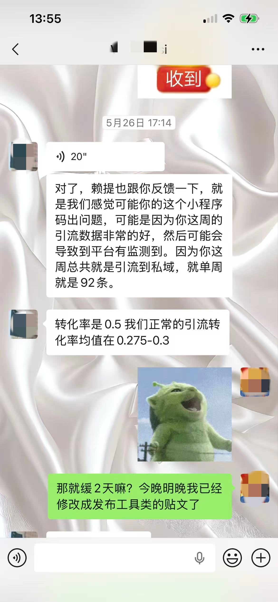
关键数据：
· 优化后单周引流至私域 92 条
· 私域转化率达到 0.5（50%）
· 同期正常引流转化率均值仅 0.275 ~ 0.3
转化率直接翻倍，远超其余所有渠道的平均值——以至于引流数据表现过于突出，平台监测系统判定小程序码可能存在异常，主动联系提醒。
· 优化后单周引流至私域 92 条
· 私域转化率达到 0.5（50%）
· 同期正常引流转化率均值仅 0.275 ~ 0.3
转化率直接翻倍，远超其余所有渠道的平均值——以至于引流数据表现过于突出，平台监测系统判定小程序码可能存在异常，主动联系提醒。
结论：私域转化率不是靠「更多曝光」解决的，而是靠精准击碎用户的每一个信任障碍——解释规则、拆解步骤、提前透明、主动声明。话术设计的本质是「信任工程」。
→ 流转至环节六
01 // 方向定义🧠 人工
选择核心指标与优先级
背景：刚接手时，数据不升反降——封面点击率均值从 16.2% 跌到 14.4%，甚至比未接手时更差。这说明单纯换人操盘但不改变方法论，数据只会更差而不会更好。
判断逻辑：资源有限，不能什么都改，必须选对优先级。先解决「转化效率」再解决「流量规模」——因为流量漏斗的底部不修好，上面灌再多流量都是浪费。
执行优先级：
· 第一优先级：封面点击率提升 — 直接影响帖子能否过初始流量池
· 第二优先级：私域转化率提升 — 直接影响商业变现效率
· 第三优先级：改变账号流量来源结构 — 从工具类用户转向岗位用户
· 第四优先级：涨粉量提升 — 长期积累，跟随前三个指标自然增长
判断逻辑：资源有限，不能什么都改，必须选对优先级。先解决「转化效率」再解决「流量规模」——因为流量漏斗的底部不修好，上面灌再多流量都是浪费。
执行优先级：
· 第一优先级：封面点击率提升 — 直接影响帖子能否过初始流量池
· 第二优先级：私域转化率提升 — 直接影响商业变现效率
· 第三优先级：改变账号流量来源结构 — 从工具类用户转向岗位用户
· 第四优先级：涨粉量提升 — 长期积累，跟随前三个指标自然增长
02 // 数据对比🧠 人工 🤖 Agent
三阶段数据对比：AI Agent 介入前后
用数据验证方法论的有效性——同一个账号、同一个品类，唯一变量是「是否引入 AI Agent 进行深度共创」
COVER CTR · 封面点击率三阶段对比
+1.43%
vs 未接手基线
平均点击率提升
+3.23%
vs 接手未用 AI
AI 介入后提升
+22.4%
相对增幅
点击率提升比例
关键洞察：接手后不用 AI Agent，数据反而比接手前更差（均值 14.4% vs 16.2%）。引入 AI Agent 深度共创后，均值回升至 17.63%，不仅超过接手前基线 +1.43%，更比未用 AI 阶段提升 +3.23 个百分点，相对提升 22.4%。最低点击率从 9.1% 提升至 13.5%，下限被显著拉高——说明 AI Agent 不是偶尔做出爆款，而是系统性地提升了整体水平。
03 // 效果验证🧠 人工
私域转化率：同类账号 No.1
20%
同类账号平均转化率
VS
50%
优化后转化率 · No.1
经过话术优化（环节五），私域转化率从行业平均水平直接提升至 50%，是同类账号均值 20% 的 2.5 倍，位列所有同类账号 No.1。
单周引流至私域 92 条，转化效率之高以至于引起平台注意——平台主动联系反馈「引流数据非常好，可能会导致平台监测」。这个「副作用」本身就是效果的最好证明。
单周引流至私域 92 条，转化效率之高以至于引起平台注意——平台主动联系反馈「引流数据非常好，可能会导致平台监测」。这个「副作用」本身就是效果的最好证明。
04 // 数据总结🧠 人工
方法论验证：数据说明了什么
三组对比回答了一个核心问题：AI Agent 到底有没有用？
对比一 · 换人不换方法 = 数据更差。接手后前 20 天没有引入 AI Agent，纯靠人工经验操盘，封面点击率均值反而下降 1.8 个百分点（16.2% → 14.4%）。说明光换人是不够的，方法论才是关键变量。
对比二 · 引入 AI Agent = 系统性提升。从 5.21 开始引入 AI Agent 深度共创——不是把 AI 当工具用，而是让 AI 参与从分析、到策略、到执行的全链路。均值 +3.23%，最低值 +1.7%，最高值 +3.3%，三个指标全面上升。
对比三 · 私域转化率 2.5 倍于同行。话术优化不是「换几个字」的事，而是系统性地击碎用户的每一个信任障碍——解释规则、拆解步骤、提前透明、主动声明。结果是 50% vs 20%，转化率直接拉到 No.1。
对比一 · 换人不换方法 = 数据更差。接手后前 20 天没有引入 AI Agent，纯靠人工经验操盘，封面点击率均值反而下降 1.8 个百分点（16.2% → 14.4%）。说明光换人是不够的，方法论才是关键变量。
对比二 · 引入 AI Agent = 系统性提升。从 5.21 开始引入 AI Agent 深度共创——不是把 AI 当工具用，而是让 AI 参与从分析、到策略、到执行的全链路。均值 +3.23%，最低值 +1.7%，最高值 +3.3%，三个指标全面上升。
对比三 · 私域转化率 2.5 倍于同行。话术优化不是「换几个字」的事，而是系统性地击碎用户的每一个信任障碍——解释规则、拆解步骤、提前透明、主动声明。结果是 50% vs 20%，转化率直接拉到 No.1。
核心结论：数据证明了这套方法论的有效性——人负责定义问题、设计逻辑、判断优先级；AI 负责分析数据、提炼规律、批量执行。不是「人 or AI」，而是「人 × AI」。
→ 流转至环节七
01 // 持续发现🧠 人工
不断挖掘
竞品和爆款
持续动作：
· 发现「谁突然跑起来了」
· 分析和拆解爆款结构
· 监控赛道新玩法
· 发现「谁突然跑起来了」
· 分析和拆解爆款结构
· 监控赛道新玩法
02 // AI 输出🤖 Agent
执行分析
找到共性
输入：竞品/爆款样本
执行：结构化拆解 · 提炼共性规律 · 不断 update 知识库
输出：更新后的规则库
执行：结构化拆解 · 提炼共性规律 · 不断 update 知识库
输出：更新后的规则库
→ 闭环回到环节一：账号分析（持续正循环）
∞ // 增长飞轮
闭环反馈至全链路
增长优化 → 账号分析 → 封面制作 → 标题输出 → 文案制作 → 私域转化 → 数据分析 → 增长优化 → ∞